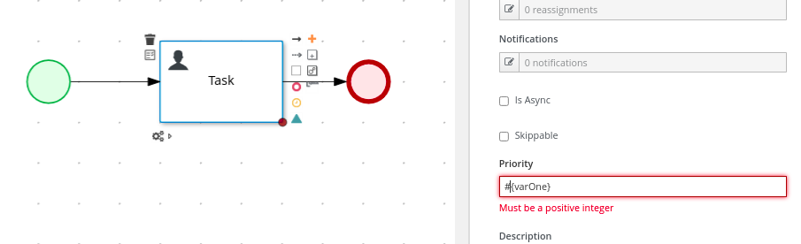
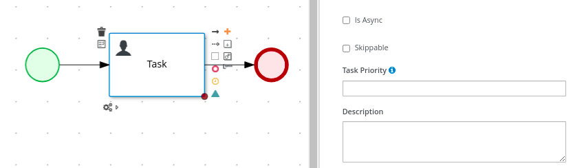
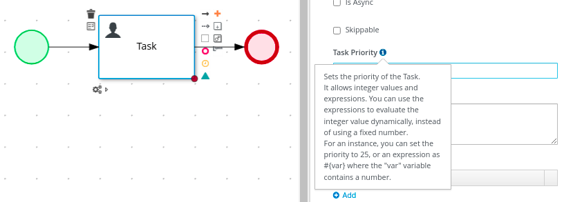

Setting Task Priority as an Mvel Expression
In the recent release of Business Central 7.67 as well as Kogito Channels 0.18, a change has been made to Task priority. Before the value could only be set using an Integer, but turns out a more useful way had been requested by users where they needed the value to be set as a Mvel expression #{value}.
As you can see in the image below, this was the way it was set before. The value was validated to be an integer.

As you can see in the image below, this field now accepts values other than Integer where you can set the value as a Mvel expression.


Hope you find this new functionality useful.